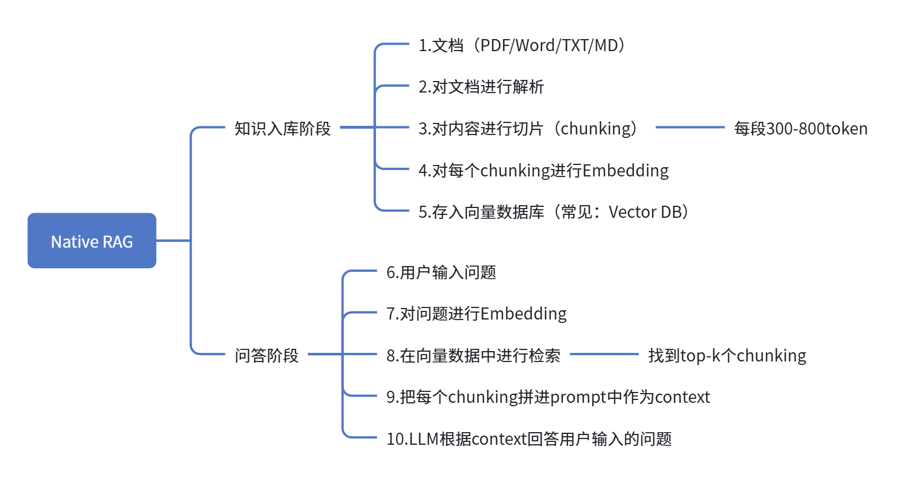

AI Product Portfolio – Zoey
转型 AI 产品经理作品集 | 基于 RAG 的族谱知识问答助手
AI Case
Prompt Lab
About Me
AI Case：族谱知识问答助手
背景
我设计了一款面向家族历史爱好者的 AI 产品——「族谱知识问答助手」。用户上传族谱 PDF 或输入文字资料后，系统可理解并回答关于祖先、世系、迁徙、历史事件等问题。产品目标是降低族谱研究门槛，让普通人也能轻松“对话”祖先。
解决方案
产品基于 RAG（检索增强生成）架构，结合向量数据库与 LLM，实现精准、可追溯的问答体验。
RAG 架构图：
用户提问 → 向量检索（相似片段）→ 上下文拼接 → LLM 生成答案 → 返回结构化响应

产品说明
支持 PDF/文本上传，自动分块与向量化
支持自然语言提问，如“我祖父的出生年份？”
答案附带来源片段（可点击查看原文），增强可信度
支持多轮对话，保持上下文记忆
支持导出问答记录与族谱摘要
产品价值
让族谱研究从“专业门槛”变为“人人可用”
提升家族文化传承效率，增强情感连接
为后续扩展至“家谱图谱可视化”“跨家族关系分析”打下基础
Prompt Lab：族谱问答助手
System Prompt（系统角色）
你是一位专业的族谱研究员助手，擅长从历史文献中提取关键信息并回答用户问题。请基于提供的上下文（族谱内容）进行准确、有依据的回答。如果信息不足，请诚实说明，不要编造。回答需清晰、有条理，并标注信息来源段落。
User Prompt（用户提问模板）
问题：{{用户输入的问题}} 上下文：{{检索到的相关族谱片段}} 请根据上述上下文，回答用户问题。要求： - 答案简洁、准确、有依据 - 如需引用原文，请标注段落编号（如：第3段） - 若信息不足，请回复“暂无足够信息”
About Me：从 UI 到 AI PM 的转型之路
我的背景
我原本是一名 UI/UX 设计师，拥有 3 年互联网产品设计经验，专注于用户研究与界面体验优化。在参与多个 AI 项目后，我被“产品如何用技术解决真实问题”所吸引，开始系统学习 AI 产品方法论，包括 RAG 架构、Prompt Engineering、模型评估等。
为什么转型 AI PM？
我希望从“设计界面”转向“设计智能体验”，用产品思维驱动技术落地，让 AI 真正服务于人。族谱问答助手是我第一个完整从 0 到 1 的 AI 产品实践，涵盖需求分析、架构设计、Prompt 优化、用户场景测试等环节。
我的优势
用户洞察力
：从 UI 背景出发，擅长挖掘用户真实需求
技术理解力
：能读懂 RAG、Prompt、向量数据库等技术原理
产品落地能力
：能将技术概念转化为可交付的产品功能
学习与迭代
：持续跟进 AI 产品趋势，快速适应变化
未来目标
成为能驾驭 AI 技术、以用户为中心的产品经理，打造有温度、有智能、有社会价值的 AI 产品。
📫 联系：3262328026@qq.com 🐙 GitHub：
zoey-cjj
💼 作品集：
https://zoey-cjj.github.io/ai-portfolio/
↑ Top